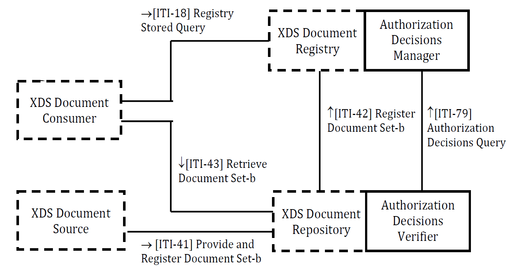

Integrating the Healthcare Enterprise

Technical Framework Supplement
Secure Retrieve (SeR)
Revision 2.0 - Public Comment
Date: August 12, 2022
Author: ITI Technical Committee
Email: iti@ihe.net
Please verify you have the most recent version of this document. See here for Trial Implementation and Final Text versions and here for Public Comment versions.
Foreword
This is a supplement to the IHE IT Infrastructure Technical Framework. Each supplement undergoes a process of public comment and trial implementation before being incorporated into the volumes of the Technical Frameworks.
This supplement is published on August 12, 2022 for public comment. Comments are invited and can be submitted using the ITI Public Comment form or by creating a GitHub Issue. In order to be considered in development of the trial implementation version of the supplement, comments must be received by September 12, 2022.
This supplement describes changes to the existing technical framework documents.
"Boxed" instructions like the sample below indicate to the Volume Editor how to integrate the relevant section(s) into the relevant Technical Framework volume.
| Editor: Please amend Section X.X by the following |
|---|
Where the amendment adds text, make the added text
bold underline. Where the
amendment removes text, make the removed text
bold strikethrough. When entire
new sections are added, introduce with editor's instructions
to "add new text" or similar, which for readability are not
bolded or underlined.
General information about IHE can be found at IHE.net.
Information about the IHE IT Infrastructure domain can be found at IHE Domains.
Information about the organization of IHE Technical Frameworks and Supplements and the process used to create them can be found at Profiles and IHE Process.
The current version of the IHE Technical Framework can be found at https://profiles.ihe.net/ITI.
CONTENTS
- Introduction to This Supplement
- Open Issues and Questions
- Closed Issues
- IHE Technical Frameworks General Introduction
- IHE Technical Frameworks General Introduction Appendices
- Volume 1 - Profiles
- 39 Secure Retrieve (SeR) Profile
- Volume 2 - Transactions
- Volume 2 - Appendices
- Volume 3 - Content Modules
- Volume 4 - National Extensions
Introduction to This Supplement
This supplement defines new functionalities for a Community with a unique and centralized Access Control system. This profile is limited to those deployment models and their policies where a central authorization authority can make complete and definitive decisions, yet support federated identity/authentication. In these deployment models no actors except the central authorization authority need to know the fine-grain policies to enforce.
The supplement describes how to create a "system of trust" between the actor that can perform Authorization Decisions (on behalf of Consent Docs, Policies and Creation/Access/Disclosure rules) and actors that actually store clinical data and documents. For example, in a typical XDS environment, there are many XDS Document Repositories that store documents. These systems are not aware of Consent Documents published by patients, and cannot apply Access/Creation/Disclosure Policies to requests for Document retrieval; then the replication of Access Control functionalities is unfeasible and/or too expensive (due to integration burdens and total cost of ownership).
The objective of the Secure Retrieve Profile is the definition of a mechanism to convey Authorization Decisions between actors in the Community, attesting that the reliable Authorization Decisions Manager implementing a Policy Decision Point (PDP) makes the access decision.
The starting requirements/constraints upon which this profile is developed are described below:
- A unique Authorization Decisions Manager (or PDP) performs Authorization Decisions for all XDS Document Consumer and all XDS Document Repositories involved in a Community.
- XDS Document Repositories cannot manage the whole set of information needed to perform Authorization Decisions (XDS Document Repositories are not required to store metadata. If the Repository stores metadata, the metadata might be insufficient to perform an access decision).
- The XDS infrastructure is not fully federated; a clear separation of duties and responsibilities between PDP and XDS Document Repositories is needed (Repositories store clinical documents; PDP evaluates access rights to those contents).
- The XDS Document Repositories must enforce Authorization Decisions made by the Policy Decision Point.
- A technical pattern that reduces behavioral and transactional changes for the Consumer side is clearly preferred (lower costs for deployment and for security reasons).
This supplement is a standalone profile because it defines a flexible pattern that could be used by any Service Provider that queries for Authorization Decisions granted by a trusted Authorization Decisions Manager (or PDP). However, the focus is to add Access Control functionalities to the XDS environment.
This profile introduces two new actors (Authorization Decisions Manager and Authorization Decisions Verifier) and one new transaction (Authorization Decisions Query).
This profile does not describe how Authorization Decisions are performed. However, this profile relies on the XACML-SAML framework for messages and transactions between the actors.
This profile describes how a Service Provider (e.g., Document Repository) can request Authorization Decisions for clinical data granted to an Requester Entity (e.g., a user retrieving clinical documents).
Open Issues and Questions
- As the profile covers not only document retrieval, shall it be renamed from "Secure Retrieve" (SeR) to e.g., "Health IT Access Decision Delegation" (HADD)?
- A change in Section 3.79.4.2.2 prescribes to populate
the status code according to Section 4.10 "Element samlp:Response: XACMLAuthzDecision
Response" of OASIS SAML 2.0 Profile of XACML v2.0 (errata)
instead of using a fixed value
urn:oasis:names:tc:SAML:2.0:status:Success-- this is because otherwise it would be impossible cover error cases. Does this change break the backward compatibility? - Shall information about human users in the Authorization Decisions Manager's audit record (added with the Swiss change proposal) be deleted again?
- Shall the audit record definitions of the both actors be reworked to be made consistent with definitions in other IHE profiles?
Closed Issues
Which is the best technical approach for the solution?
- It is suggested an evaluation of both the technical approaches: SAML token vs. JWT Bearer token. A comparison between the two standards will be formalized in a document. First step: evaluation of the efficiency of the two solutions proposed.
- A JWT token is only OAuth which is REST. What we may end
up with is an equivalent of this in MHD. Right now, we are
doing this for XDS, so the strategy should be:
- Focus on SAML and SOAP, and advancing XUA.
- Let MHD handle the RESTful equivalent after this is in TI.
- Volume 1 should be independent of the standards selected. Volume 2 may eventually contain an extra piece that shows how OAuth, REST and MHD meet the same volume 1 need as the SAML/SOAP pieces that are developed this year.
- Therefore, the plan is to proceed with SAML and SOAP for now, but not mention this in volume 1, only in volume 2.
I've introduced a transaction to "Request Retrieval Token". This allows in the same environment simple Consumer and Consumer compliant with SeR guideline. This is, from my point of view, acceptable because there are certain types of docs (administrative docs and so on...) that probably can be shared without Retrieval Token. In my perspective this choice brings flexibility to the solution. Is this reasonable?
- This can be addressed silently defining Domain Policies that state that some documents can be retrieved without Retrieval Token. No reasons to profile this feature.
Many different patterns have been analyzed. An evaluation spreadsheet was produced. For further details see: CRAC Standards Pattern Selection Criteria Matrix - 2020140323.xls
Which is the best drafting approach for the supplement? (Suggestion to postpone this decision/discussion, after a deep analysis of the problem. This is something that can be addressed after the first face to face meeting, once we have clear the SCOPE and the USE CASES that can be covered)
- The supplement is drafted as an independent supplement focused on an XDS environment. The pattern selected, allows to be applied for future applications to other use cases. Transaction [ITI-79] is profiled taking this in mind (extensible payload for the XACMLAuthorizationDecisionQuery Request message)
There was a proposal: Use Artifact Resolution Protocol (defined in SAML 2.0 core specification) instead of XACMLAuthzDecisionQuery. Rationale: The transaction [ITI-79] defines a standard semantic to check if an authorization token exists, but XACMLAuthzDecision Query is used to request and perform Authorization Decision.
- The proposal was rejected: The use case does not require the sharing of SAML Artifact. The XACMLAuthzDecisionQuery does not require that the Authorization Decisions Manager performs Authorization Decisions following the XACML standard. XACML Authorization Query Request message just conveys needed parameters to locate an authorization. In addition to that, Artifact Resolution protocol seems to add some requirements that broke the basic use case "In all cases, the artifact MUST exhibit a single-use semantic such that once it has been successfully resolved, it can no longer be used by any party." And again: "The responder MUST enforce a one-time-use property on the artifact by ensuring that any subsequent request with the same artifact by any requester results in an empty response as described above." For the XDS use case, the Authorization Decisions Manager could request the same authorization many times; the one-shot authorization is not useful in this use case.
It was suggested to use Attribute Name: urn:oasis:names:tc:SAML:2.0:profiles:attribute:XPSA:subject in accordance to XSPA instead of the subject-id. The proposal was rejected. The using of the XSPA guideline does not add value, and add requirements that do not match with SeR use case.
This profile mandates the grouping between XDS Actors and XUA Actors (see Section 3). Readers are asked to provide feedback on this requirement. It is obvious that XUA environment (and SAML 2.0 token) is helpful for entity identification. Are there any other preferred approaches to perform this identification?
- No other approaches are suggested. XUA grouping is confirmed.
Readers should focus on the XACML encoding defined for the XDSDocumentEntry.uniqueId and for the XUA Attribute Patient ID. Both this attribute are identified by the same @Category and same @AttributeId. This could create problems, because the Authorization Decisions Manager should interpret which is the docID and which is the patient ID. It is not clear to the tech committee how much the impact is.
- A new urn is defined for patient ID.
This profile defines a mandatory grouping between Authorization Decisions Manager and Document Registry. It is an obvious grouping, but implementations could also use other approaches. Readers are asked to provide feedback on this requirement.
- The profile does not profile the transaction to request Authorizations. This Authorization Decision is likely performed during the Query Request processing and requires input parameters local defined by the Domain. However, the performing of these decisions needs a lot of information managed by the Registry or conveyed within the Query Request. In accordance to this a grouping approach is proposed.
The pattern described in this profile requires the Pull of authorization from an Authorization Decisions Manager. This approach is compliant with XACML standard. For efficiency reasons a Push approach could be better. In a Push environment when an Authorization is granted for a resource, this authorization is sent to the XDS Document Repository that stores this resource. This approach is not described in standard specification yet.
- The Pull approach is chosen to reduce computational load on the central Authorization Decisions Manager
IHE Technical Frameworks General Introduction
The IHE Technical Framework General Introduction is shared by all of the IHE domain technical frameworks. Each technical framework volume contains links to this document where appropriate.
9 Copyright Licenses
IHE technical documents refer to, and make use of, a number of standards developed and published by several standards development organizations. Please refer to the IHE Technical Frameworks General Introduction, Chapter 9 - Copyright Licenses for copyright license information for frequently referenced base standards.
10 Trademark
IHE® and the IHE logo are trademarks of the Healthcare Information Management Systems Society in the United States and trademarks of IHE Europe in the European Community. Please refer to the IHE Technical Frameworks General Introduction, Section 10 - Trademark for information on their use.
IHE Technical Frameworks General Introduction Appendices
The IHE Technical Framework General Introduction Appendices are components shared by all of the IHE domain technical frameworks. Each technical framework volume contains links to these documents where appropriate.
| **Editor: Please update the following appendices to the General Introduction as indicated below. Note that these are not appendices to this domain's Technical Framework (TF-1, TF-2, TF-3, or TF-4) but rather, they are appendices to the IHE Technical Frameworks General Introduction located here. ** |
|---|
Appendix A - Actor Summary Definitions
| **Editor: Please add the following new or modified actors to the IHE Technical Frameworks General Introduction Appendix A: ** |
|---|
| Actor | Definition |
|---|---|
| Authorization Decisions Manager | Actor that can perform Access Decisions, evaluating requests for authorization. The result of this evaluation is an Authorization Decision that certifies the disclosing of clinical data. |
| Authorization Decisions Verifier | This actor queries for Authorization Decisions for Requester Entities used to enforce Authorization Decisions. |
Appendix B - Transaction Summary Definitions
| **Editor: Please add the following new or modified transactions to the IHE Technical Frameworks General Introduction Appendix B: ** |
|---|
| Transaction | Definition |
|---|---|
| Authorization Decisions Query [ITI-79] | Transaction used by the Service Provider (Authorization Decisions Verifier) to request Authorization Decisions to clinical data granted for the Requester Entity. |
Appendix D - Glossary
| **Editor: Please add the following new or modified glossary terms to the IHE Technical Frameworks General Introduction Appendix D ** |
|---|
| Glossary Term | Definition |
|---|---|
| Authorization Decision Manager | A system that is responsible for access/creation/disclosure decisions performed according to Domain Policies, Consent Documents, etc. This actor may implement additional functionalities of Policy Decision Points (PDP), Policy Administration Points (PAP) and a Policy Information Points (PIP). |
| Authorization Decision | An authorization token that describes whether clinical data can be accessed by a specific Requester Entity. |
| Requester Entity | The entity identified within the identity assertion. This entity queries any actor grouped with the Authorization Decision Verifier for clinical data (e.g., documents). Authorization Decisions are created and associated with the Requester Entity. |
Volume 1 - Profiles
| Editor: Please add the following Section 39 to Volume 1 |
|---|
39 Secure Retrieve (SeR) Profile
This profile defines a framework for a centralized Access Control system, which separates the duties of creation and enforcement of Authorization Decisions.
The main objective of this profile is to create a system of trust between the actor that produces Authorization Decisions (Authorization Decisions Manager), and actors that are grouped with Authorization Decisions Verifier to enforce the Authorization Decisions (e.g., XDS Document Repositories).
This type of approach is useful in many situations:
- XDS environments with many XDS Document Repositories which expose clinical documents without an access control system already implemented. These systems require minimal integration burden to support functionalities defined in this profile.
- Federation of repositories in a new XDS Affinity Domain. The federation of repositories requires the subscription of the whole set of domain policies for content Creation/Access/Disclosure. A centralized Authorization Decision Manager coupled with the central XDS Document Registry allows the management of accesses to local Repositories without requiring the development of complex Access Control systems.
- Environments where Consent Documents, Policies and Data Access Rules can be collected, managed and discovered only in a centralized way.
- Sharing infrastructure with strong enforcement of Access Control systems. In many organizational and jurisdictional environments, access to clinical data is managed by Servers that store/register clinical data and cannot be regulated by the Consumer itself.
In those scenarios, this profile defines how to create a "logical federation" between an Authorization Decision Manager (responsible for enabling/denying accesses) and actors that enforce Authorization Decisions (e.g., XDS Document Repositories that store documents and expose them without knowledge related to the user/role/consent documents/policies etc.). Actors that store clinical data could only trust a decision made by the Authorization Decision Manager.
Authorization Decision Manager functionalities are out of scope for this profile. The implementation details typically are domain specific and locally defined.
This profile allows the creation of a system where the existence of a clinical data item that cannot be accessed by a specific user is totally obscured from the Requester Entity.
Creation, management and enforcement of policies are out of scope for this profile.
This profile allows addressing the following security risks (related to clinical data exposure):
The actor storing clinical data does not know the Authorization Decision that should be enforced. Therefore, if it denies access to data, there is a failure of availability. If it provides the document inappropriately, there is a risk to confidentiality. The SeR Profile allows this actor to be aware of the decision made, only asking for the existence of Authorizations granted by the trusted Authorization Decision Manager and enforcing that decision. In accordance with the Community policies, the actor storing clinical data can make further access control decisions.
A separation of duties between the clinical data consumer (that requests authorization and clinical data items) and the Authorization Decisions Manager (or PDP) is created. The SeR Profile delegates decisions to the Authorization Decisions Manager and the enforcement to the Authorization Decisions Verifier.
39.1 SeR Actors, Transactions, and Content Modules
This section defines the actors, transactions, and/or content modules in this profile.
Figure 39.1-1 shows the actors directly involved in the SeR Profile and the relevant transactions between them.
Figure 39.1-1: SeR Actor Diagram
Table 39.1-1 lists the transactions for each actor directly involved in the SeR Profile. To claim compliance with this profile, an actor shall support all required transactions (labeled "R") and may support the optional transactions (labeled "O").
Table 39.1-1: SeR Profile - Actors and Transactions
| Actors | Transactions | Optionality | Reference |
|---|---|---|---|
| Authorization Decisions Manager | Authorization Decisions Query [ITI-79] | R | ITI TF-2: 3.79 |
| Authorization Decisions Verifier | Authorization Decisions Query [ITI-79] | R | ITI TF-2: 3.79 |
The Authorization Decisions Query [ITI-79] provides support for different query types, depending on which actor is grouped with the Authorization Decisions Verifier and which transactions (which clinical data items) are in focus. This supplement profiles one standard query type: "Retrieve Document Set Authorization Decision" and supports extensions for other query types, which may be defined on vendor, community, regulatory domain, or national level. The optionality of supporting various query types is a subject of local regulations.
39.1.1 Actor Descriptions and Actor Profile Requirements
Most requirements are documented in Transactions (Volume 2) and Content Modules (Volume 3). This section documents any additional requirements on profile's actors.
39.1.1.1 Authorization Decisions Manager
The Authorization Decisions Manager is responsible for the management of access control decisions in the entire Community. From the Access Control point of view, this actor is the unique Policy Decision Point (PDP) of the entire domain because it may decide on the outcome of an incoming authorization request in order to provide access to specific clinical data (e.g., documents). The Authorization Decisions Manager creates an Access Decision.
The Authorization Decision does not need to be exposed to other systems, and it certifies the decision made. The Authorization Decisions Manager may cache the Authorization Decision and reuse it when processing subsequent requests with the same parameters, if the local domain policies allow such behavior, and implement additional Access Control functionalities required in the specific implementation scenario.
(Refer to the White Paper IHE ITI Access Control White Paper for further information about PDP and Access Control Systems.)
39.1.1.2 Authorization Decisions Verifier
The Authorization Decisions Verifier is the actor that verifies if the Requester Entity is authorized to access clinical data by querying the Authorization Decisions Verifier. The Authorization Decisions Verifier actor acts as a Policy Enforcement Point (PEP) and enforces the Authorization Decision made by the trusted Policy Decision Point.
(Refer to the White Paper IHE ITI Access Control White Paper for further information about PEP and Access Control Systems.)
39.2 SeR Actor Options
Options that may be selected for each actor in this profile, if any, are listed in the Table 39.2-1. Dependencies between options when applicable are specified in notes.
Table 39.2-1: SeR - Actors and Options
| Actor | Option Name | Reference |
|---|---|---|
| Authorization Decisions Manager | XUA (Note 1) | Section 39.2.1 |
| IUA (Note 1) | Section 39.2.2 | |
| Authorization Decisions Verifier | XUA (Note 1) | Section 39.2.1 |
| IUA (Note 1) | Section 39.2.2 |
Note 1: The actor shall support at least one of the options
39.2.1 XUA Option
The actors supporting this option shall be grouped with XUA X-Service Provider (ITI TF-1: 13.4).
39.2.2 IUA Option
The actors supporting this option shall be grouped with IUA Resource Server (ITI TF-1: 34.1.1.3).
39.3 SeR Required Actor Groupings
This profile requires the identification of the entity that queries clinical data. Authorization Decisions are granted to a specific entity and can be used only by that entity to get access to the clinical data.
Grouping with XUA Actors shall be supported. Other approaches for entity identification may be defined by local domain policies.
An actor from this profile (Column 1) shall implement all of the required transactions and/or content modules in this profile in addition to all of the transactions required for the grouped actor (Column 2).
Section 39.5 describes some optional groupings that may be of interest for security considerations and Section 39.6 describes some optional groupings in other related profiles.
Table 39.3-1: SeR - Required Actor Groupings
| SeR Actor | Actor to be grouped with | Reference | Content Bindings Reference |
|---|---|---|---|
| Authorization Decisions Manager | ATNA Secure Node or Secure Application | ITI TF-1: 9.1 | -- |
| Authorization Decisions Verifier | ATNA Secure Node or Secure Application | ITI TF-1: 9.1 | -- |
39.4 SeR Overview
39.4.1 Concepts
This section describes use cases for the SeR Profile.
39.4.2 Use Cases
39.4.2.1 Use Case #1: XDS Repositories with a centralized Authorization Decision Manager
This use case describes how an XDS Document Repository uses Authorization Decisions made by the Authorization Decisions Manager.
In this use case, the XUA Option is used. The groupings between XDS Actors and SeR Actors enforce the system of trust between the XDS Document Registry that localizes the XDS DocumentEntries and the XDS Document Repositories that store XDS documents. This use case assumes that Authorization Decisions are based on the document metadata and groups the XDS Document Registry and the Authorization Decisions Manager for simplicity.
In this use case the XDS Document Repositories are all in the same XDS Affinity Domain and delegate Authorization Decisions to the Authorization Decisions Manager grouped with the XDS Document Registry.
In this use case the Authorization Decisions Manager manages all information needed to perform an Authorization Decision and therefore combines the functionality of a Policy Decision Point (PDP) and a Policy Information Point (PIP).
The Authorization Decisions Manager may also implement functions of a Policy Administration Point (PAP), administering and maintaining Policies in the XDS Affinity Domain.
In this use case a special implementation is used intended to increase the overall performance. Authorization Decisions are created when the Requester Entity queries the XDS metadata and stored for a specific time interval, expecting that the document metadata are queried from the XDS Registry before the documents are queried from the XDS Repository within the time frame set by the Authorization Decision lifetime.
 Figure 39.4.2.1-1: SeR Actor Diagram with XDS Actor Groupings
39.4.2.1.1 XDS Repositories with a centralized Authorization Decision Manager Use Case Description
When a Requester Entity request documents from an XDS Repository, the XDS Document Repository uses an [Authorization Decisions Query [ITI-79] to query the Authorization Decision from the Authorization Decisions Manager. The Authorization Decisions Manager builds an Authorization Decision based on
- the information send with the Authorization Decisions Query [ITI-79]
- the document metadata stored in the XDS Registry
- the Patient Consent and the Access Policies.
The XDS Document Repository grouped with an Authorization Decisions Verifier enforces the Authorization Decision returned with the Authorization Decisions Query [ITI-79].
For example:
Mr. White comes to his GP, Dr. Brown, to show him a Laboratory Report. This Laboratory Report is shared in an XDS infrastructure. Using his EHR, Dr. Brown queries for Mr. White's Laboratory Reports shared in the XDS infrastructure. The Query Response returns some DocumentEntries to the XDS Document Consumer. Each XDSDocumentEntry in the response is authorized for the retrieval. Dr. Brown uses his XDS Document Consumer to retrieve these documents. The XDS Document Repository enforces the Authorization Decision for each document requested by limiting the documents provided to Dr. Brown.
39.4.2.1.2 XDS Repositories with a centralized Authorization Decision Manager Process Flow
Figure 39.4.2.1.2-1: Process Flow of the use case. Note: The source code for the UML diagram is available here.
39.4.2.2 Use Case #2: Query Type Extension Use Case
This use case describes how a Community uses the SeR Profile to enforce authorization for all actors which manage sensitive data and uses various query types in a national extensions.
In this use case sensitive information has been identified to be:
- clinical documents which contain the details of the disorder and the treatment
- the document metadata which contain information on the author and clinical facility which may be used to draw conclusions about the disorder
- the patient identifiers which contain identifier of the assigning authorities and may be used to draw conclusions about the disorder
- the personal data of the healthcare professionals and their relation to institutions which may be used to draw conclusions about the employer-employee relationship
To protect the sensitive information against malicious misuse the following actors in the Community are grouped with the Authorization Decisions Verifier:
- XDS Document Repository
- XDS Document Registry
- Patient Demographics Supplier
- Healthcare Provider Directory
These actors use Authorization Decisions Query [ITI-79] messages whenever a Requester Entity queries for the sensitive data to retrieve an Authorization Decision from a single Authorization Decisions Manager in the Community and disclose the data only in the case the access is authorized.
As defined in the XUA Option, actors which request sensitive information are grouped with the X-Service User Actor of the XUA Profile. They use the authentication data identifying the Requester Entity to retrieve the X-User Assertion from the X-Assertion Provider and provides the X-User Assertion in the security header of the request for sensitive information. The X-User Assertion conveys the identity data and further information required for Authorization Decisions (user role, user institution, etc.) from other sources (e.g., Healthcare Provider Directory).
The information required by the Authorization Decisions Manager differs depending on the actor which is queried for sensitive information. The difference is reflected in the query options chosen and different query types are used, which are specified as extensions (e.g., national extension) to this profile.
39.4.2.2.1 Query Type Extension Use Case Description
A healthcare professional queries sensitive data which requires authorization from an actor managing the data. The actors involved perform all necessary actions to enforce Authorization Decision for the data in the background and returns only the data the healthcare professional is authorized for.
The actor used by the healthcare professional to query the sensitive information performs the following steps:
- authenticate the healthcare professional
- exchange the authentication assertion to an X-User Assertion
- perform the query adding the X-User Assertion in the security header of the query request.
The actor queried for the sensitive data performs the following steps:
- request an Authorization Decision from the Authorization Decisions Manager using the information provided with the query payload and the X-User Assertion
- enforce the Authorization Decision returning only the data the healthcare professional is authorized for.
39.4.2.2.2 Query Type Extension Process Flow
Figure 39.4.2.2.2-1: Process Flow of the use case with query type extension Note: Actors profiled in this supplement are yellow boxed and transactions profiled are drawn as solid lines.The source code for the UML diagram is available here.
39.4.2.3 Use Case #3: Mobile Health Use Case
This use case describes how an MHD Document Responder uses Authorization Decisions made by the Authorization Decisions Manager.
To protect the sensitive information against malicious misuse the MHD Document Responder is grouped with the Authorization Decisions Verifier and performs an Authorization Decisions Query [ITI-79] messages whenever a MHD Document Consumer queries for the sensitive data to disclose the data based on the Access Decision.
In this use case, the IUA Option is used, i.e., the MHD Document Consumer actor is grouped with IUA Authorization Client actor and uses the data provided by the IUA Authorization Server which identifies the Requester Entity and further information required for Authorization Decisions (user role, user institution, etc.).
In addition, the MHD Document Responder is grouped with the IUA Resource Server to support the Incorporate Access Token [ITI-72] transaction.
39.4.2.3.1 Mobile Health Use Case Description
In this use case Dr. Brown uses the new mHealth infrastructure provides by his hospital.
Dr. Brown uses her tablet to query the laboratory reports of her patient Mr. White. The hospitals mHealth app has previously been registered and authorized by the hospital IT authorizing the mHealth app to perform the transactions defined in the MHD Profile.
The mHealth infrastructure enforces Authorization Decisions in the background and discloses the laboratory reports depending on the access policies of the hospital (e.g., identity and role of Dr. Brown, employment state, etc.).
39.4.2.3.2 Mobile Health Use Case Process Flow
Figure 39.4.2.3.2-1: Process Flow of the mhealth use case. Note: Actors profiled in this supplement are yellow boxed and transactions profiled are drawn as solid lines. The source code for the UML diagram is available here.
39.5 SeR Security Considerations
To prevent interaction with malicious third parties, a closed system of trust based on TLS digital identities is strongly recommended. Authorization Decisions Manager should accept queries only from a restricted set of Secure Nodes/Applications. The Authorization Decisions Verifier should perform queries only to the domain-identified Authorization Decisions Manager.
Authorization Decisions my be collected by the Authorization Decisions Manager. These Authorization Decisions should not be exposed to other systems and encryption may be used (when stored by the Authorization Decisions Manager) to avoid the disclosure of sensitive information.
The centralized Access Control system introduces a single point-of-failure risk in a Community. A failure of the Authorization Decisions Manager could result in legitimate access being denied.
This profile introduces an XDS Error Code in order to codify an additional reason for document retrieve failure. See ITI TF-3: Table 4.2.4.1-2.
Adding more technical details within the failure response may be used to refine malicious requests. For example, if the error created by the Authorization Decisions Verifier conveys the reason of the failure, such as "the authorization is expired" or "the authorization is released in a different Functional Context," it may provide information to a malicious Document Consumer that can then try to refine subsequent requests. This profile supports to hide the Authorization Decisions to the Requester Entity. In this case, the aforementioned error code shall not be used.
39.6 SeR Cross Profile Considerations
XDS Document Consumer that participates in an XDS environment using SeR framework shall be grouped with an XUA X-Service User.
XUA
X-Service User involved in a SeR framework shall be able
to identify the specific Requester Entity conveying its
logical identity (user ID, application ID, etc.) within the
<Subject>/<NameID> element.
Volume 2 - Transactions
| Editor: Please add the following Section 3.79 to Volume 2 |
|---|
3.79 Authorization Decisions Query [ITI-79]
3.79.1 Scope
This transaction is used by the Authorization Decisions Verifier to query for Authorization Decisions, granted and managed by the Authorization Decisions Manager. These Authorization Decisions are created to disclose specific clinical data.
The information required to perform Authorization Decisions shall be conveyed with the Authorization Decisions Query [ITI-79] request, i.e., the identifier of the Requester Entity and other attributes required for a given use case.
This transaction is based on SOAP v1.2 exchange protocol and Synchronous Web services (see ITI TF-2: Appendix V).
3.79.2 Actor Roles
| Actor | Role |
|---|---|
| Authorization Decisions Manager | This actor manages Authorization Decisions granted for a Requester Entity and for specific clinical data. |
| Authorization Decisions Verifier | This actor queries for Authorization Decisions based on the Requester Entity and requested clinical data. |
3.79.3 Referenced Standards
- OASIS SOAP v1.2
- OASIS Security Assertion Markup Language (SAML) v2.0
- OASIS eXtensible Access Control Markup Language (XACML) v2.0
- OASIS Multiple resource profile of XACML v2.0
- OASIS SAML 2.0 profile for XACML v2.0
- OASIS Cross-Enterprise Security and Privacy Authorization (XSPA) Profile of SAML v2.0 for Healthcare Version 2.0 (not normative)
3.79.4 Messages
 Figure
3.79.4-1: Interaction Diagram
Figure
3.79.4-1: Interaction Diagram
3.79.4.1 XACMLAuthorizationDecisionQuery Request
This message shall be used by the Authorization Decisions
Verifier to query the Authorization Decisions Manager for
Access Decisions. This message relies on the SAML v2.0
extension for XACML and uses the element
<XACMLAuthzDecisionQuery> to convey the
subject identifier and other query parameters. The request
message complies with the multiple resource profile of XACML
v2.0 and the Authorization Decisions Verifier may query
Authorization Decisions for many clinical data items in one
query. Attributes of XUA or IUA assertions (depending from
the supported option) shall be mapped into xacml-context
attribute elements as defined in SAML 2.0 Profile of XACML
v2.0 (Section 2).
3.79.4.1.1 Trigger Events
Actors grouped with a Authorization Decisions Verifier triggers the XACMLAuthorizationDecisionQuery Request when a Requester Entity requests clinical data items (e.g., a Retrieve Document Set Request message) which require authorization.
3.79.4.1.2 Message Semantics
The XACMLAuthorizationDecisionQuery Request message shall use SOAP v1.2 message encoding.
The WS-Addressing Action header shall have this value:
urn:ihe:iti:2014:ser:XACMLAuthorizationDecisionQueryRequest
The body of the message shall use an
<XACMLAuthzDecisionQuery> element
(defined in the SAML 2.0 Profile for XACML v2.0) to convey
Authorization Query parameters.
This element shall contain the following attribute:
@ReturnContext: shall be set to "false" because the content of the XACMLAuthorizationDecision Request is not needed within the Authorization Result.
IHE does not define constraints for other attributes (see OASIS SAML 2.0 Profile of XACML Version 2.0 Section 4 for details).
The <XACMLAuthzDecisionQuery> element
shall have only one child element
<Request>. This element shall comply with
OASIS Multiple resource profile of XACML v2.0. This element
shall have the following child elements:
- Exactly one child element
<Subject>that identifies the Requester Entity. - One or more elements
<Resource>that identify particular clinical data items or classes of clinical data items. - Exactly one element
<Action>that identifies the action the Authorization Decisions Manager has to authorize. - Exactly one element
<Environment>that identifies run-time properties of the execution context.
Particular assignment of attributes on these elements depends on the query type, as described in the next sub-section.
3.79.4.1.2.1 Query Types and Request Attribute Assignments
Currently, there is only one standard query type: "Retrieve Document Set Authorization Decision". Additional query types may be defined on vendor, community, regulatory domain, or national level.
3.79.4.1.2.1.1 Retrieve Document Set Authorization Decision Request Attributes
The SeR query type "Retrieve Document Set Authorization Decision" mandates the usage of the XUA Option and requires the following assignment of request attributes:
The
<Subject>element shall have at least one child element<Attribute>characterized by@AttributeId="urn:oasis:names:tc:xacml:1.0:subject:subject-id"and@DataType="http://www.w3.org/2001/XMLSchema#string". The<AttributeValue>child element shall convey the subject identifier. This element shall have the same value of the<Subject>/<NameID>element conveyed within the SAML assertion. See the Provide X-User Assertion [ITI-40] transaction for details. Any other SAML attribute related to the subject shall be added as additional XACML attribute. Table 3.79.4.1.2-1 defines which XUA attributes are identified as related to the subject (each attribute with "XACML Category" equal tourn:oasis:names:tc:xacml:1.0:subject-category:access-subject).There is one
<Resource>element for each document requested by the Requester Entity. In the XDS environment, a<Resource>element identifies a document. Each document is identified by two required<Attribute>child elements.- The first
<Attribute>element shall have@AttributeId="urn:oasis:names:tc:xacml:1.0:resource:resource-id"and@DataType="http://www.w3.org/2001/XMLSchema#string". The<AttributeValue>child element stores the value of the XDSDocumentEntry.uniqueId. - The second
<Attribute>element shall have@AttributeId="urn:ihe:iti:ser:2016:document-entry:repository-unique-id"and@DataType="http://www.w3.org/2001/XMLSchema#anyURI". The<AttributeValue>child element stores the value of the XDSDocumentEntry.repositoryUniqueId.
- The first
Any other SAML attribute related to the clinical data
requested shall be added as additional XACML attribute
(e.g., homeCommunityId). Table 3.79.4.1.2-1 defines which
XUA attributes are identified as related to the clinical
data (each attribute with "XACML Category" equal to
urn:oasis:names:tc:xacml:1.0:resource).
Attributes that belong to the XACML environment category
(e.g., XUA attributes with "XACML Category" equal to
urn:oasis:names:tc:xacml:1.0:environment in
Table 3.79.4.1.2-1) shall be added to an
<Environment> element.
The <Action> element shall have a
child element <Attribute> with
@AttributeId="urn:oasis:names:tc:xacml:1.0:action:action-id"
and
@DataType="http://www.w3.org/2001/XMLSchema#anyURI".
This attribute shall have a child element
<AttributeValue> characterized by value:
urn:ihe:iti:2007:RetrieveDocumentSetResponse.
Additional attributes that belong to the XACML action
category (e.g., XUA attributes with "XACML Category" equal
to urn:oasis:names:tc:xacml:1.0:action in Table
3.79.4.1.2-1) shall be added to an
<Action> element.
The mapping of attributes from SAML v2.0 assertion defined in the Provide X-User Assertion [ITI-40] transaction into XACML query attributes is defined below. For each attribute from [ITI-40], the XACML Category and @AttributeId are identified:
Table 3.79.4.1.2-1: [ITI-40] Attributes mapping into XACML Query Attributes
| [ITI-40] Attribute | XACML Category | AttributeId | DataType |
|---|---|---|---|
| Subject ID | urn:oasis:names:tc:xacml:1.0:subject-category:access-subject | urn:oasis:names:tc:xacml:1.0:subject:subject-id | http://www.w3.org/2001/XMLSchema#string |
| Subject Organization | urn:oasis:names:tc:xacml:1.0:subject-category:access-subject | urn:oasis:names:tc:xspa:1.0:subject:organization | http://www.w3.org/2001/XMLSchema#string |
| Subject Organization ID | urn:oasis:names:tc:xacml:1.0:subject-category:access-subject | urn:oasis:names:tc:xspa:1.0:subject:organization-id | http://www.w3.org/2001/XMLSchema#anyURI |
| Home Community ID (Note 1) | urn:oasis:names:tc:xacml:1.0:subject-category:access-subject | urn:ihe:iti:xca:2010:homeCommunityId | http://www.w3.org/2001/XMLSchema#anyURI |
| National Provider Identifier (NPI) | urn:oasis:names:tc:xacml:1.0:subject-category:access-subject | urn:oasis:names:tc:xspa:1.0:subject:npi | http://www.w3.org/2001/XMLSchema#string |
| Subject Role | urn:oasis:names:tc:xacml:1.0:subject-category:access-subject | urn:oasis:names:tc:xacml:2.0:subject:role | http://www.w3.org/2001/XMLSchema#anyURI |
| Authz-Consent | urn:oasis:names:tc:xacml:1.0:subject-category:access-subject | urn:ihe:iti:bppc:2007:docid | http://www.w3.org/2001/XMLSchema#anyURI |
| Patient Identifier | urn:oasis:names:tc:xacml:1.0:resource | urn:ihe:iti:ser:2016:patient-id | http://www.w3.org/2001/XMLSchema#string |
| PurposeOfUse | urn:oasis:names:tc:xacml:1.0:subject-category:access-subject | urn:oasis:names:tc:xspa:1.0:subject:purposeofuse | http://www.w3.org/2001/XMLSchema#anyURI |
Note 1: To enable Authorization Decisions for this [ITI-79] transaction, Home Community Id identifies the requesting user's community identity as identified in the SAML header in [ITI-40]. In other words, it is not the homeCommunityId of the community where the requested document resides.
Any SAML 2.0 Attribute codified using the HL7 CD or CE dataType shall be codified into a XACML Attribute using the percentage urn encoding and DataType http://www.w3.org/2001/XMLSchema#anyURI as defined below:
"urn:ihe:iti:2014:ser:[codeSystem]:[codeSystemName]:[code]:[displayName]"
For example:
<saml:Attribute NameFormat="urn:oasis:names:tc:SAML:2.0:attrname-format:uri"
Name=" urn:oasis:names:tc:xacml:2.0:action:purpose">
<saml:AttributeValue>
<value xmlns="urn:hl7-org:v3" xsi:type="CD"
code="RECORDMGT"
displayName="records management"
codeSystem="2.16.840.1.113883.1.11.20448"
codeSystemName="Purpose of Use"/>
</saml:AttributeValue>
</saml:Attribute>shall be codified in a urn:
<Attribute AttributeId="urn:oasis:names:tc:xspa:1.0:subject:purposeofuse"
DataType="http://www.w3.org/2001/XMLSchema#anyURI">
<AttributeValue>
urn:ihe:iti:2014:ser:2.16.840.1.113883.1.11.20448:Purpose%20Of%20Use:RECORDMGT:records%20management
</AttributeValue>
</Attribute>Additional SAML 2.0 <Attribute>
elements useful as authorization query parameters may be
identified by domain policies. Any additional
<Attribute> can be provided to the
Authorization Decisions Verifier using a SAML v2.0
assertion. OASIS SAML 2.0 Profile of XACML Version 2.0,
Section 2 provides guidance in mapping SAML attributes into
XACML attributes. Domain Policies should define to which
XACML category (Subject, Resource, Action or Environment)
each additional Attribute belongs.
3.79.4.1.2.1.1.1 Example of a SOAP v1.2 XACMLAuthorizationDecisionQuery Request message
<?xml version="1.0" encoding="UTF-8"?>
<soap:Envelope xsi:schemaLocation="http://www.w3.org/2003/05/soap-envelope soap-envelope.xsd"
xmlns:soap="http://www.w3.org/2003/05/soap-envelope"
xmlns:xsi="http://www.w3.org/2001/XMLSchema-instance"
xmlns:xacml-saml="urn:oasis:xacml:2.0:saml:assertion:schema:os">
<soap:Header xsi:schemaLocation="http://www.w3.org/2005/08/addressing ws-addr.xsd"
xmlns:wsa="http://www.w3.org/2005/08/addressing">
<wsa:Action>urn:ihe:iti:2014:ser:XACMLAuthorizationDecisionQueryRequest</wsa:Action>
<wsa:MessageID>urn:uuid:9376254e-da05-41f5-9af3-ac56d63d8ebd</wsa:MessageID>
<wsa:To>https://AuthorizationDecisionsManager</wsa:To>
</soap:Header>
<soap:Body
xsi:schemaLocation="urn:oasis:xacml:2.0:saml:assertion:schema:os access_control-xacml-2.0-saml-assertion-schema-os.xsd">
<xacml-samlp:XACMLAuthzDecisionQuery xmlns:xacml-samlp="urn:oasis:xacml:2.0:saml:protocol:schema:os"
xacml-samlp:InputContextOnly="false" xacml-samlp:ReturnContext="false">
<Request xmlns="urn:oasis:names:tc:xacml:2.0:context:schema:os"> <!-- Requester Entity identifier -->
<Subject>
<Attribute AttributeId="urn:oasis:names:tc:xacml:1.0:subject:subject-id"
DataType="http://www.w3.org/2001/XMLSchema#string">
<AttributeValue>admin</AttributeValue>
</Attribute>
</Subject> <!-- DOC 1 -->
<Resource>
<Attribute AttributeId="urn:oasis:names:tc:xacml:1.0:resource:resource-id"
DataType="http://www.w3.org/2001/XMLSchema#string">
<AttributeValue>documentID1</AttributeValue>
</Attribute>
<Attribute AttributeId="urn:ihe:iti:ser:2016:document-entry:repository-unique-id"
DataType="http://www.w3.org/2001/XMLSchema#anyURI">
<AttributeValue>urn:oid:1.2.3.4.5
</AttributeValue>
</Attribute>
</Resource> <!-- DOC 2 -->
<Resource>
<Attribute AttributeId="urn:oasis:names:tc:xacml:1.0:resource:resource-id"
DataType="http://www.w3.org/2001/XMLSchema#string">
<AttributeValue>documentID2</AttributeValue>
</Attribute>
<Attribute AttributeId="urn:ihe:iti:ser:2016:document-entry:repository-unique-id"
DataType="http://www.w3.org/2001/XMLSchema#anyURI">
<AttributeValue>urn:oid:1.2.3.4.5</AttributeValue>
</Attribute>
</Resource> <!-- DOC 3 -->
<Resource>
<Attribute AttributeId="urn:oasis:names:tc:xacml:1.0:resource:resource-id"
DataType="http://www.w3.org/2001/XMLSchema#string">
<AttributeValue>documentID3</AttributeValue>
</Attribute>
<Attribute AttributeId="urn:ihe:iti:ser:2016:document-entry:repository-unique-id"
DataType="http://www.w3.org/2001/XMLSchema#anyURI">
<AttributeValue>urn:oid:1.2.3.4.5
</AttributeValue>
</Attribute>
</Resource>
<Action>
<Attribute AttributeId="urn:oasis:names:tc:xacml:1.0:action-id"
DataType="http://www.w3.org/2001/XMLSchema#anyURI">
<AttributeValue>urn:ihe:iti:2007:RetrieveDocumentSetResponse</AttributeValue>
</Attribute>
</Action>
<Environment/>
</Request>
</xacml-samlp:XACMLAuthzDecisionQuery>
</soap:Body>
</soap:Envelope>3.79.4.1.3 Expected Actions
When the Authorization Decisions Manager receives an
XACMLAuthorizationDecisionQuery Request message, it
evaluates each Authorization Request conveyed within the
XACMLAuthorizationDecision (one for each
<Resource> element).
The Authorization Decisions Manager shall produce a
XACMLAuthorizationDecisionQuery Response message that
conveys the Access Decisions. One Result for each
<Resource> shall be sent in the response
message.
3.79.4.1.3.1 Retrieve Document Set Authorization Decision Expected Actions
If the Authorization Decisions Manager supports decision caching, then it shall verify the existence of Authorization Decisions that match the XACML Query parameters:
- The Requester Entity identified within the
XACMLAuthorizationDecisionQuery
(
<Subject>/<Attribute>element with@AttributeId="urn:oasis:names:tc:xacml:1.0:subject:subject-id") is an entity that has Authorization Decisions already granted;
AND
- Among these authorizations, there is an Authorization
Decision for each clinical data item identified within the
XACMLAuthorizationDecisionQuery
(
<Resource>/<Attribute>elements with@AttributeId="urn:oasis:names:tc:xacml:1.0:resource:resource-id"and"urn:ihe:iti:xds-b:2007:document-entry:repository-unique-id").
If other parameters (such as attributes taken from an [ITI-40] identity assertion) are specified within the XACMLAuthorizationDecisionQuery Request message and if domain policies require the creation of authorizations related to these parameters, then the Authorization Decisions Manager shall verify the match with these additional parameters (e.g., an Authorization Decision is created for clinical data item A for entity X acting for PurposeOfUse Y, the same entity cannot retrieve the clinical data item acting for PurposeOfUse Z).
3.79.4.2 XACMLAuthorizationDecisionQuery Response
The XACMLAuthorizationDecisionQuery Response message is created by the Authorization Decisions Manager in response to the XACMLAuthorizationDecisionQuery Request. This message conveys to the Authorization Decisions Verifier the results of the evaluation made by the Authorization Decisions Manager. For each clinical data item (e.g., a document) specified within the Request message, the Authorization Decisions Manager provides an Authorization Result that shall be used by the Authorization Decisions Verifier to determine which of the requested clinical data items to return to the client in response to the trigger transaction request, in accordance with local policies. This message relies on the XACML extension of SAML v2.0 protocol standard. Authorization Results are conveyed using an XACMLAuthzDecisionStatement.
3.79.4.2.1 Trigger Events
This message is created by the Authorization Decisions Manager after the evaluation of the XACML AuthorizationDecisionQuery Request message. The Authorization Decisions Manager identifies Authorization Decisions applicable to the requested clinical data items and the Requester Entity, and produces a result of the evaluation done.
3.79.4.2.2 Message Semantics
The XACMLAuthorizationDecisionQuery Response message is
based on OASIS SAML 2.0 Profile of XACML Version 2.0. That
profile relies on SAML v2.0 protocol standard. The
Addressing Action header of the SOAP message shall be:
urn:ihe:iti:2014:ser:XACMLAuthorizationDecisionQueryResponse.
The XACMLAuthorizationStatement (defined in the OASIS
SAML 2.0 Profile of XACML Version 2.0) is conveyed within a
SAML v2.0 Assertion. The Assertion does not need to be
signed. The SAML StatusCode of the Response message shall be
set as defined in Section 4.10 "Element
<samlp:Response>: XACMLAuthzDecision
Response" of OASIS SAML 2.0 Profile of XACML v2.0
(errata).
The <Issuer> of the Authorization
Assertion should identify the trusted Authorization
Decisions Manager (e.g., SOAP endpoint of the Web Service,
or the home community OID in URN format, depending on local
policies).
See Section 3.1 of the OASIS SAML 2.0 Profile of XACML
Version 2.0 for further details on the message structure. As
specified in the OASIS Multiple resource profile of XACML
v2.0, the XACML <Response> element shall
contain one <Result> element for each
<Resource> element identified within the
XACMLAuthorizationDecisionQuery Request message. Each
<Result> element shall contain a
@ResourceId attribute that identifies the
<AttributeValue> value of the related
resource.
As defined in the XACML v2.0 standard, there are four
possible values associated with the
<Decision>. The Authorization Decisions
Manager shall associate codes to the result as described
below:
- Permit: if a valid Authorization Decision exists allowing the disclosure of the requested clinical data item to the Requester Entity.
- Deny: if no valid Authorization Decisions exist for the identified Document/Requester Entity, or if Authorization Decision does not allow disclosure of the Document to the Requester Entity.
- Indeterminate: if the Authorization Decisions Manager cannot discover if Authorization Decisions are granted (e.g., internal Errors, or DB unreachable for network problems, ...).
- NotApplicable: if access to the requested clinical data item is not managed by the Authorization Decisions Manager. If the Authorization Decisions Manager cannot determine if the Requester Entity can access the clinical data item requested.
3.79.4.2.2.1 Example of a SOAP v1.2 XACMLAuthorizationDecisionQuery Response message
<?xml version="1.0" encoding="UTF-8"?>
<soap:Envelope xsi:schemaLocation="http://www.w3.org/2003/05/soap-envelope soap-envelope.xsd"
xmlns:soap="http://www.w3.org/2003/05/soap-envelope"
xmlns:xsi="http://www.w3.org/2001/XMLSchema-instance"
xmlns:xacml-saml="urn:oasis:xacml:2.0:saml:assertion:schema:os">
<soap:Header xsi:schemaLocation="http://www.w3.org/2005/08/addressing ws-addr.xsd"
xmlns:wsa="http://www.w3.org/2005/08/addressing">
<wsa:Action>urn:ihe:iti:2014:XACMLAuthorizationDecisionQueryResponse</wsa:Action>
<wsa:RelatesTo>urn:uuid:9376254e-da05-41f5-9af3-ac56d63d8ebd</wsa:RelatesTo>
<wsa:MessageID>urn:uuid:7534324t-mm56-45t5-6tg4-gt56d63g6hym</wsa:MessageID>
</soap:Header>
<soap:Body xmlns:samlp="urn:oasis:names:tc:SAML:2.0:protocol" xmlns:xsi="http://www.w3.org/2001/XMLSchema-instance"
xsi:schemaLocation="urn:oasis:names:tc:SAML:2.0:protocol saml-schema-protocol-2.0.xsd">
<samlp:Response ID="a123456" Version="2.0" IssueInstant="2014-04-16T14:53:55Z">
<samlp:Status>
<samlp:StatusCode Value="urn:oasis:names:tc:SAML:2.0:status:Success"/>
<samlp:StatusMessage>OK</samlp:StatusMessage>
</samlp:Status>
<saml:Assertion xmlns:saml="urn:oasis:names:tc:SAML:2.0:assertion" Version="2.0" ID="a9812368"
IssueInstant="2006-05-31T13:20:00.000">
<saml:Issuer>https://XACMLPDP.example.com</saml:Issuer>
<saml:Statement xsi:type="xacml-saml:XACMLAuthzDecisionStatementType"
xsi:schemaLocation="urn:oasis:xacml:2.0:saml:assertion:schema:os access_control-xacml-2.0-saml-assertion-schema-os.xsd"
xmlns:xacml-saml="urn:oasis:xacml:2.0:saml:assertion:schema:os">
<Response xmlns="urn:oasis:names:tc:xacml:2.0:context:schema:os">
<Result ResourceId="DocumentID1">
<Decision>Deny</Decision>
</Result>
<Result ResourceId="DocumentID2">
<Decision>Permit</Decision>
</Result>
<Result ResourceId="DocumentID3">
<Decision>Permit</Decision>
</Result>
</Response>
</saml:Statement>
</saml:Assertion>
</samlp:Response>
</soap:Body>
</soap:Envelope>3.79.4.2.3 Expected Actions
Expected actions are part of each query type definition, because a generalized guidance on the enforcement of decisions is impossible due to different semantics of transactions which can be combined with [ITI-79], possibility of partial success vs. requirement of strong atomicity, potential dependencies between clinical data items ("if the decision is Permit for item X and Deny for item Y, then..."), potential presence of local policies and other "environmental" factors, etc.
This section describes expected actions of the standard SeR query types.
3.79.4.2.3.1 Retrieve Document Set Authorization Decision Expected Actions
When the Authorization Decisions Verifier receives a XACMLAuthorizationDecisionQuery Response, the XDS Document Repository shall enforce the decision results according to local policy.
If a Deny decision is returned, the XDS Document Repository shall not disclose the document, unless local policies allow it.
If a Permit decision is returned, the XDS Document Repository shall disclose the document, unless additional local decisions are applied.
If NotApplicable or Indeterminate decisions are returned, local policies determine what action is appropriate for the XDS Document Repository to perform.
If one or more of the requested documents are not
authorized, then the Document Repository shall send a status
urn:ihe:iti:2007:ResponseStatusType:PartialSuccess
in the Retrieve Document Set Response message (see ITI
TF-2: 3.43.5).
If all the requested documents are not authorized, then
the Document Repository shall send a status
urn:oasis:names:tc:ebxml-regrep:ResponseStatusType:Failure
in the Retrieve Document Set Response message (see ITI
TF-2: 3.43.5).
The XDS Document Repository shall generate an Error of type:
- DocumentAccessNotAuthorized
3.79.5 Security Considerations
The Authorization Decisions Query transaction requires TLS communication between actors involved.
This transaction mandates the creation of Authorization Decisions associated at least with the Requester Entity and with the clinical data item requested. If additional parameters need to be associated to the Access Decision, these parameters shall be provided within the Authorization Decisions Query transaction.
3.79.5.1 Security Audit Considerations
Actors involved in the Authorization Decisions Query transaction are recommended to record the "Query" event creating audit messages in accordance to the following structure.
The audit message shall identify:
- The entity that requires authorization
- The clinical data items that have been requested
- The overall result of the Authorization processing
- Human users, if known
3.79.5.1.1 Authorization Decisions Verifier audit message
| Real World Entities | Field Name | Opt. | Value Constraints |
|---|---|---|---|
| EventId | M | EV (110112, DCM, "Query") | |
| EventActionCode | M | E = Execute | |
| EventDateTime | M | Not specialized | |
| EventOutcomeIndicator | M | Not specialized | |
| EventTypeCode | M | EV("ITI-79", "IHE Transactions", "Authorization Decisions Query") | |
| Source (Authorization Decisions Verifier) (1) | |||
| Human Requestor (0..n) | |||
| Destination (Authorization Decisions Verifier) (1) | |||
| Query Parameters (1) | |||
| Requester Entity (1) | |||
| Authorization Result (1) | |||
AuditMessage/ ActiveParticipant (1) |
UserId | U | Not specialized |
| AlternativeUserID | M | the process ID as used within the local operating system in the local system of logs | |
| UserName | U | Not specialized | |
| UserIsRequestor | U | Not specialized | |
| RoleIDCode | M | EV (110153, DCM, "Source") | |
| NetworkAccessPointTypeCode | U | "1" for machine (DNS) name "2" for IP address | |
| NetworkAccessPointID | U | The machine name or IP address, as specified in DICOM PS 3.15 A.5.3. |
AuditMessage/ ActiveParticipant (0..n) |
UserId | M | identity of the human that initiated the transaction |
| AlternativeUserID | U | Not specialized | |
| UserName | U | Not specialized | |
| UserIsRequestor | U | Not specialized | |
| RoleIDCode | U | Access Control role(s) the user holds that allows this transaction | |
| NetworkAccessPointTypeCode | NA | ||
| NetworkAccessPointID | NA |
AuditMessage/ ActiveParticipant (1) |
UserId | M | Authorization Decisions Manager SOAP URI |
| AlternativeUserID | U | the process ID as used within the local operating system in the local system of logs | |
| UserName | U | Not specialized | |
| UserIsRequestor | U | Not specialized | |
| RoleIDCode | M | EV (110152, DCM, "Destination") | |
| NetworkAccessPointTypeCode | U | "1" for machine (DNS) name "2" for IP address | |
| NetworkAccessPointID | U | The machine name or IP address, as specified in DICOM PS 3.15 A.5.3. |
AuditMessage/ ParticipantObjectIdentification (1) |
ParticipantObjectTypeCode | M | "1" (person) |
| ParticipantObjectTypeCodeRole | M | "11" (security user entity) | |
| ParticipantObjectDataLifeCycle | U | Not specialized | |
| ParticipantObjectIDTypeCode | M | EV("ITI-79", "IHE Transaction", "Authorization Decisions Query") | |
| ParticipantObjectSensitivity | U | Not specialized | |
| ParticipantObjectID | M | The Requester Entity who wants to retrieve clinical data (identified in the Attribute with AttributeId urn:oasis:names:tc:xacml:1.0:subject:subject-id) | |
| ParticipantObjectName | U | Not specialized | |
| ParticipantObjectQuery | U | Not specialized | |
| ParticipantObjectDetail | U | Not specialized |
AuditMessage/ ParticipantObjectIdentification (1) |
ParticipantObjectTypeCode | M | "2" (SYSTEM) |
| ParticipantObjectTypeCodeRole | M | "24" (query) | |
| ParticipantObjectDataLifeCycle | U | Not specialized | |
| ParticipantObjectIDTypeCode | M | EV("ITI-79", "IHE Transaction", "Authorization Decisions Query") | |
| ParticipantObjectSensitivity | U | Not specialized | |
| ParticipantObjectID | M | Not specialized | |
| ParticipantObjectName | U | Not specialized | |
| ParticipantObjectQuery | U | The <Request>, base 64 encoded | |
| ParticipantObjectDetail | U | Not specialized |
AuditMessage/ ParticipantObjectIdentification (1) |
ParticipantObjectTypeCode | M | "2" (SYSTEM) |
| ParticipantObjectTypeCodeRole | M | "13" (security resource) | |
| ParticipantObjectDataLifeCycle | U | Not specialized | |
| ParticipantObjectIDTypeCode | M | EV("ITI-79", "IHE Transaction", "Authorization Decisions Query") | |
| ParticipantObjectSensitivity | U | Not specialized | |
| ParticipantObjectID | M | Content of StatusCode element (overall result of the authorization) | |
| ParticipantObjectName | U | Not specialized | |
| ParticipantObjectQuery | U | Not specialized | |
| ParticipantObjectDetail | U | Not specialized |
3.79.5.1.2 Authorization Decisions Manager audit message
| Real World Entities | Field Name | Opt. | Value Constraints |
|---|---|---|---|
| EventId | M | EV (110112, DCM, "Query") | |
| EventActionCode | M | E = Execute | |
| EventDateTime | M | Not specialized | |
| EventOutcomeIndicator | M | Not specialized | |
| EventTypeCode | M | EV("ITI-79", "IHE Transactions", "Authorization Decisions Query") | |
| Source (Authorization Decisions Verifier) (1) | |||
| Human Requestor (0..n) | |||
| Destination (Authorization Decisions Verifier) (1) | |||
| Query Parameters (1) | |||
| Requester Entity (1) | |||
| Authorization Result (1) | |||
AuditMessage/ ActiveParticipant |
UserId | U | Not specialized |
| AlternativeUserID | M | the process ID as used within the local operating system in the local system of logs | |
| UserName | U | Not specialized | |
| UserIsRequestor | U | Not specialized | |
| RoleIDCode | M | EV (110153, DCM, "Source") | |
| NetworkAccessPointTypeCode | U | "1" for machine (DNS) name "2" for IP address | |
| NetworkAccessPointID | U | The machine name or IP address, as specified in DICOM PS 3.15 A.5.3. |
AuditMessage/ ActiveParticipant (0..n) |
UserId | M | identity of the human that initiated the transaction |
| AlternativeUserID | U | Not specialized | |
| UserName | U | Not specialized | |
| UserIsRequestor | U | Not specialized | |
| RoleIDCode | U | Access Control role(s) the user holds that allows this transaction | |
| NetworkAccessPointTypeCode | NA | ||
| NetworkAccessPointID | NA |
AuditMessage/ ActiveParticipant (1) |
UserId | M | Authorization Decisions Manager SOAP URI |
| AlternativeUserID | U | the process ID as used within the local operating system in the local system of logs | |
| UserName | U | Not specialized | |
| UserIsRequestor | U | Not specialized | |
| RoleIDCode | M | EV (110152, DCM, "Destination") | |
| NetworkAccessPointTypeCode | U | "1" for machine (DNS) name "2" for IP address | |
| NetworkAccessPointID | U | The machine name or IP address, as specified in DICOM PS 3.15 A.5.3. |
AuditMessage/ ParticipantObjectIdentification (1) |
ParticipantObjectTypeCode | M | "1" (person) |
| ParticipantObjectTypeCodeRole | M | "11" (security user entity) | |
| ParticipantObjectDataLifeCycle | U | Not specialized | |
| ParticipantObjectIDTypeCode | M | EV("ITI-79", "IHE Transaction", "Authorization Decisions Query") | |
| ParticipantObjectSensitivity | U | Not specialized | |
| ParticipantObjectID | M | The person who wants to create retrieve clinical data (identified in the Attribute with AttributeId urn:oasis:names:tc:xacml:1.0:subject:subject-id) | |
| ParticipantObjectName | U | Not specialized | |
| ParticipantObjectQuery | U | Not specialized | |
| ParticipantObjectDetail | U | Not specialized |
AuditMessage/ ParticipantObjectIdentification (1) |
ParticipantObjectTypeCode | M | "2" (SYSTEM) |
| ParticipantObjectTypeCodeRole | M | "24" (query) | |
| ParticipantObjectDataLifeCycle | U | Not specialized | |
| ParticipantObjectIDTypeCode | M | EV("ITI-79", "IHE Transaction", "Authorization Decisions Query") | |
| ParticipantObjectSensitivity | U | Not specialized | |
| ParticipantObjectID | M | Not specialized | |
| ParticipantObjectName | U | Not specialized | |
| ParticipantObjectQuery | U | The <Request>, base 64 encoded | |
| ParticipantObjectDetail | U | Not specialized |
AuditMessage/ ParticipantObjectIdentification (1) |
ParticipantObjectTypeCode | M | "2" (SYSTEM) |
| ParticipantObjectTypeCodeRole | M | "13" (security resource) | |
| ParticipantObjectDataLifeCycle | U | Not specialized | |
| ParticipantObjectIDTypeCode | M | EV("ITI-79", "IHE Transaction", "Authorization Decisions Query") | |
| ParticipantObjectSensitivity | U | Not specialized | |
| ParticipantObjectID | M | Content of StatusCode element (overall result of the authorization) | |
| ParticipantObjectName | U | Not specialized | |
| ParticipantObjectQuery | U | Not specialized | |
| ParticipantObjectDetail | U | Not specialized |
3.79.5.2 Authorization Decisions Manager Specific Security Considerations
None
3.79.5.3 Authorization Decisions Verifier Specific Security Considerations
None
Volume 2 Appendices
None
Volume 3 - Content Modules
| Editor: Please add the following ErrorCode in ITI TF-3: Table 4.2.4.1-2: Error Codes |
|---|
| Error Code1 | Discussion | Transaction (See Note 1) |
|---|---|---|
| DocumentAccessNotAuthorized | The document requested is not authorized to be disclosed to the Requester Entity | RS |
Volume 4 - National Extensions
Not applicable